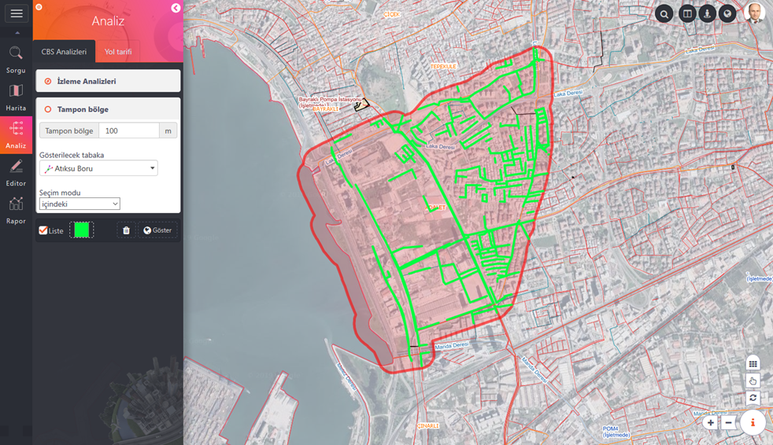

Tampon Bölge(Buffer) analizleri ile nokta, çizgi ve poligon objelerden belirli bir mesafede tampon bölge üretip bu bölge içinde kalan objeler tespit edilebilmektedir.
 Kullanımı :
Kullanımı :
1- Tampon bölge mesafesi girilir, sonrasında tampon bölge içerisinde kalan "Gösterilecek tabaka" seçilir.
2- Seçim modu ( içindeki, değen ve içindekiler, değen objeler) belirlendikten sonra "Göster" butonuna basılarak tampon oluşturulacak obje seçilir.
3- Analiz sonucu tampon bölge sınırı ve içinde kalan objeler harita ekranında ayrı ayrı gösterilir.
"Temizle" butonu izleme çizgisinin ekrandan temizlenmesini sağlamaktadır.
